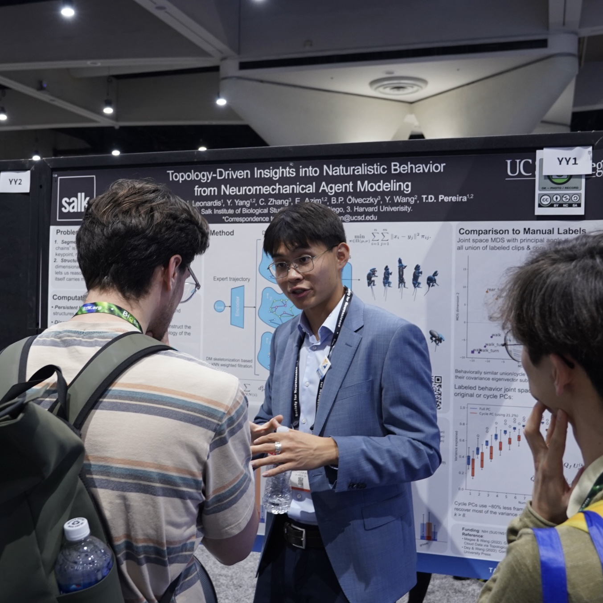
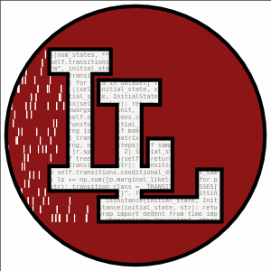
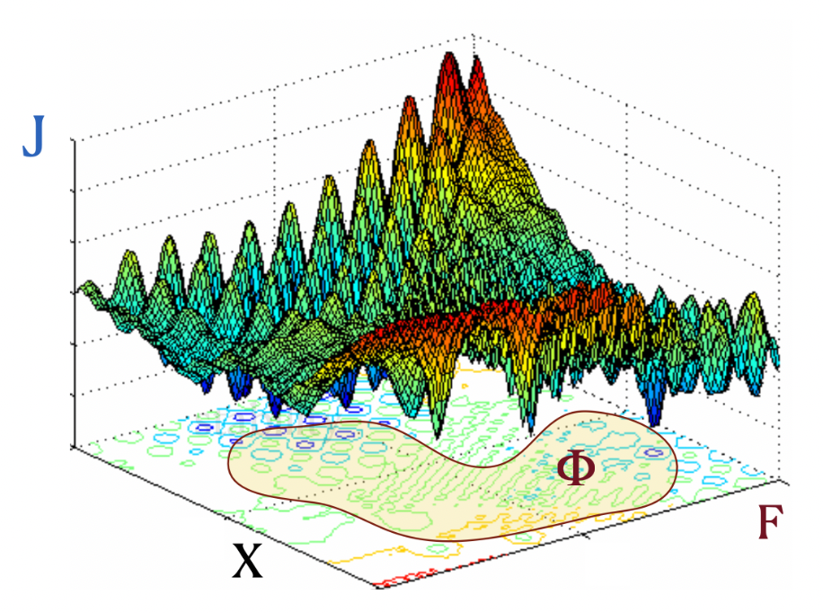
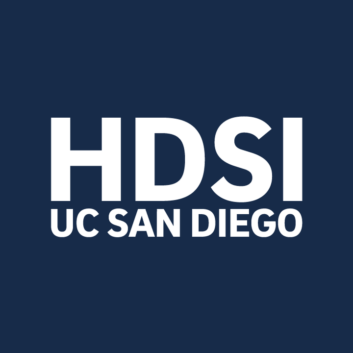

Undergraduate at Halıcıoğlu Data Science Institute - UC SanDiego

About Me
Hi! My name is Kaiwen Bian and I am a 4th year undergraduate student at UC SanDiego double majoring in Data Science and Cognitive Behavoral Neuroscience. My research interests sit at the intersection of embodied AI, computational neuroscience, and foundation models. I am fortunate to be advised by Talmo D. Pereira at the Salk Institute, Scott W. Linderman at Stanford University, and Yusu Wang and Gal Mishne at the Halıcıoğlu Data Science Institute.
Outside of my academic life, I enjoy skateboarding 🛹, surfing 🏄, and immersing myself in the serenity of the natural world 🌲
News
Research Experience
Research Intern
Developing computationally efficient deep RL imitation systems (Mimic-MJX) for bio-mechanically realistic agents, discovering topological structure in embodied behavior spaces (TopoMimic), and building code-to-action embodied agents (Code2Act).


Visiting Research Scholar
Creating latent dynamical models for planning and generating bio-mechanically realistic behaviors using deep state-space modeling methods (MimicDyn). Co-advised on the Code2Act embodied agent project from Salk.


B.S. Data Science · B.S. Cognitive Behavioral Neuroscience
Graph compositional abstraction for molecular generation (MOSAIC) and topological analysis of embodied agent behaviors. Co-advised on the TopoMimic project from Salk.